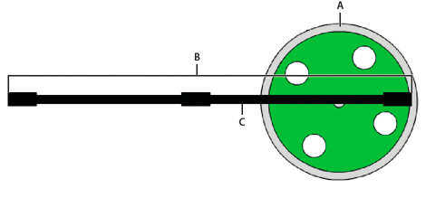
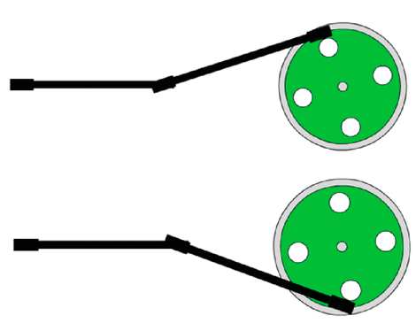

Working with inverse kinematics
Flash Player 10 and later, Adobe AIR 1.5 and
later, requires Flash CS4 or later
|

Inverse kinematics (IK) is a great technique for creating realistic
motion.
IK lets you create coordinated movements within a chain of connected
parts called an IK armature, so that the parts move together in
a lifelike way. The parts of the armature are its bones and joints.
Given the end point of the armature, IK calculates the angles for
the joints that are required to reach that end point.
Calculating those angles manually yourself would be challenging.
The beauty of this feature is that you can create armatures interactively
using Adobe® Flash® Professional.
Then animate them using ActionScript. The IK engine included with Flash
Professional performs the calculations to describe the movement
of the armature. You can limit the movement to certain parameters
in your ActionScript code.
New to the Flash Professional CS5 version of IK is the concept
of bone spring, typically associated with high-end animation applications.
Used with the new dynamic Physics Engine, this feature lets you
configure life-like movement. And, this effect is visible both at
runtime and during authoring.
To create inverse kinematics armatures, you must have a license
for Flash Professional.
Basics of Inverse Kinematics
Inverse
kinematics (IK) lets you create life-like animation by linking parts
so they move in relation to one another in a realistic manner.
For example, using IK you can move a leg to a certain position
by articulating the movements of the joints in the leg required
to achieve the desired pose. IK uses a framework of bones chained
together in a structure called an IK armature. The
fl.ik
package
helps you create animations resembling natural motion. It lets you
animate multiple IK armatures seamlessly without having to know
a lot about the physics behind the IK algorithms.
Create the IK armature with its ancillary bones and joints with
Flash Professional. Then you can access the IK classes to animate
them at runtime.
See the Using inverse
kinematics section in
Using Flash Professional
for detailed
instructions on how to create an IK armature.
Important concepts and terms
The following
reference list contains important terms that are relevant to this feature:
-
Armature
-
A kinematic chain, consisting of bones and joints, used in
computer animation to simulate realistic motion.
-
Bone
-
A rigid segment in an armature, analogous to a bone in an
animal skeleton.
-
Inverse Kinematics (IK)
-
Process of determining the parameters of a jointed flexible
object called a kinematic chain or armature.
-
Joint
-
The location at which two bones make contact, constructed
to enable movement of the bones; analogous to a joint in an animal.
-
Physics Engine
-
A package of physics-related algorithms used to provide life-like
actions to animation.
-
Spring
-
The quality of a bone that moves and reacts when the parent
bone is moved and then incrementally diminishes over time.
Animating IK Armatures Overview
After creating an IK armature in Flash Professional, use the
fl.ik
classes
to limit its movement, track its events, and animate it at runtime.
The following figure shows a movie clip named
Wheel.
The
axle is an instance of an IKArmature named
Axle
.
The IKMover class moves the armature in synchronization with the
rotation of wheel. The IKBone,
ikBone2
, in the armature
is attached to the wheel at its tail joint.

-
A.
-
Wheel
-
B.
-
Axle
-
C.
-
ikBone2
At runtime, the wheel spins in association with the
__motion_Wheel
motion tween
discussed in
Describing the animation
. An IKMover object initiates and controls the
movement of the axle. The following figure shows two snapshots of the
axle armature attached to the spinning wheel at different frames
in the rotation.

At runtime, the following ActionScript:
-
Gets information
about the armature and its components
-
Instantiates an IKMover object
-
Moves the axle in conjunction with the rotation of the wheel
import fl.ik.*
var tree:IKArmature = IKManager.getArmatureByName("Axle");
var bone:IKBone = tree.getBoneByName("ikBone2");
var endEffector:IKJoint = bone.tailJoint;
var pos:Point = endEffector.position;
var ik:IKMover = new IKMover(endEffector, pos);
ik.limitByDistance = true;
ik.distanceLimit = 0.1;
ik.limitByIteration = true;
ik.iterationLimit = 10;
Wheel.addEventListener(Event.ENTER_FRAME, frameFunc);
function frameFunc(event:Event)
{
if (Wheel != null)
{
var mat:Matrix = Wheel.transform.matrix;
var pt = new Point(90, 0);
pt = mat.transformPoint(pt);
ik.moveTo(pt);
}
}
The IK classes used to move the axle are:
-
IKArmature: describes the armature, a tree structure
consisting of bones and joints; must be created with Flash Professional
-
IKManager: container class for all the IK armatures in the
document; must be created with Flash Professional
-
IKBone: a segment of an IK armature
-
IKJoint: a connection between two IK bones
-
IKMover: initiates and controls IK movement of armatures
For complete and detailed descriptions of these classes, see
the
ik package
.
Getting information about an IK armature
First, declare variables for the armature, the bone, and the
joint that make up the parts that you want to move.
The
following code uses the
getArmatureByName()
method
of the IKManager class to assign the value of the Axle armature
to the IKArmature variable
tree
. The Axle armature
was previously created with Flash Professional.
var tree:IKArmature = IKManager.getArmatureByName("Axle");
Similarly,
the following code uses the
getBoneByName()
method
of the IKArmature class to assign to the IKBone variable the value
of the
ikBone2
bone.
var bone:IKBone = tree.getBoneByName("ikBone2");
The tail joint of the
ikBone2
bone is the part
of the armature that attaches to the spinning wheel.
The following
line declares the variable
endEffector
and assigns
to it the
tailjoint
property of the
ikBone2
bone:
var endEffector:IKJoint = home.tailjoint;
The variable
pos
is a point that stores the
current position of the
endEffector
joint.
var pos:Point = endEffector.position;
In this example,
pos
is the position of the
joint at the end of the axle where it connects to the wheel. The
original value of this variable is obtained from the
position
property
of the IKJoint.
Instantiating an IK Mover and Limiting Its Movement
An instance of
the IKMover class moves the axle.
The following line instantiates the IKMover object
ik
,
passing to its constructor the element to move and the starting
point for the movement:
var ik:IKMover = new IKMover(endEffector, pos);
The properties of the IKMover class let you limit the movement
of an armature. You can limit movement based on the distance, iterations,
and time of the movement.
The following pairs of properties enforce these limits. The pairs
consist of a Boolean value that indicates whether the movement is
limited and an integer that specifies the limit:
|
Boolean property
|
Integer property
|
Limit set
|
|
limitByDistance:Boolean
|
distanceLimit:int
|
Sets the maximum distance in pixels that
the IK engine moves for each iteration.
|
|
limitByIteration:Boolean
|
iterationLimit:int
|
Sets the maximum number of iterations the
IK engine performs for each movement.
|
|
limitByTime:Boolean
|
timeLimit:int
|
Sets the maximum time in milliseconds allotted
to the IK engine to perform the movement.
|
By default, all the Boolean values are set to
false
,
so movement is not limited unless you explicitly set a Boolean value
to
true
. To enforce a limit, set the appropriate
property to
true
and then specify a value for the
corresponding integer property. If you set the limit to a value
without setting its corresponding Boolean property, the limit is
ignored. In this case, the IK engine continues to move the object
until another limit or the target position of the IKMover is reached.
In the following example, the maximum distance of the armature
movement is set to 0.1 pixels per iteration. The maximum number
of iterations for every movement is set to ten.
ik.limitByDistance = true;
ik.distanceLimit = 0.1;
ik.limitByIteration = true;
ik.iterationLimit = 10;
Moving an IK Armature
The IKMover moves the axle inside the event listener for the
wheel. On each enterFrame event of the wheel, a new target position
for the armature is calculated. Using its
moveTo()
method,
the IKMover moves the tail joint to its target position or as far
as it can within the constraints set by its
limitByDistance
,
limitByIteration
,
and
limitByTime
properties.
Wheel.addEventListener(Event.ENTER_FRAME, frameFunc);
function frameFunc(event:Event)
{
if (Wheel != null)
{
var mat:Matrix = Wheel.transform.matrix;
var pt = new Point(90,0);
pt = mat.transformPoint(pt);
ik.moveTo(pt);
}
}
Using Springs
Inverse kinematics in Flash Professional CS5 supports bone spring.
Bone spring can be set during authoring, and bone spring attributes
can be added or modified at runtime. Spring is a property of a bone
and its joints. It has two attributes:
IKJoint.springStrength
,
which sets the amount of spring, and
IKJoint.springDamping
,
which adds resistance to the strength value and changes the rate
of decay of the spring.
Spring strength is a percent value from the default 0 (completely
rigid) to 100 (very loose and controlled by physics). Bones with
spring react to the movement of their joint. If no other translation
(rotation, x, or y) is enabled, the spring settings have no effect.
Spring damping is a percent value from the default 0 (no resistance)
to 100 (heavily damped). Damping changes the amount of time between
a bone’s initial movement and its return to a rest position.
You can check to see if springs are enabled for an IKArmature
object by checking its
IKArmature.springsEnabled
property.
The other spring properties and methods belong to individual IKJoint
objects. A joint can be enabled for angular rotation and translation
along the x- and y-axes. You can position a rotational joint’s spring
angle with
IKJoint.setSpringAngle
and a translational
joint’s spring position with
IKJoint.setSpringPt
.
This example selects a bone by name and identifies its tailJoint.
The code tests the parent armature to see if springs are enabled
and then sets spring properties for the joint.
var arm:IKArmature = IKManager.getArmatureAt(0);
var bone:IKBone = arm.getBoneByName("c");
var joint:IKJoint = bone.tailJoint;
if (arm.springsEnabled) {
joint.springStrength = 50; //medium spring strength
joint.springDamping = 10; //light damping resistance
if (joint.hasSpringAngle) {
joint.setSpringAngle(30); //set angle for rotational spring
}
}
Using IK Events
The IKEvent class
lets you create an event object that contains information about IK
Events. IKEvent information describes motion that has terminated
because the specified time, distance, or iteration limit was exceeded.
The following code shows an event listener and handler for tracking
time limit events. This event handler reports on the time, distance,
iteration count, and joint properties of an event that fires when
the time limit of the IKMover is exceeded.
var ikmover:IKMover = new IKMover(endjoint, pos);
ikMover.limitByTime = true;
ikMover.timeLimit = 1000;
ikmover.addEventListener(IKEvent.TIME_LIMIT, timeLimitFunction);
function timeLimitFunction(evt:IKEvent):void
{
trace("timeLimit hit");
trace("time is " + evt.time);
trace("distance is " + evt.distance);
trace("iterationCount is " + evt.iterationCount);
trace("IKJoint is " + evt.joint.name);
}
|
|
|
|
|